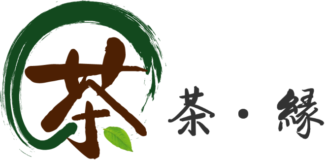
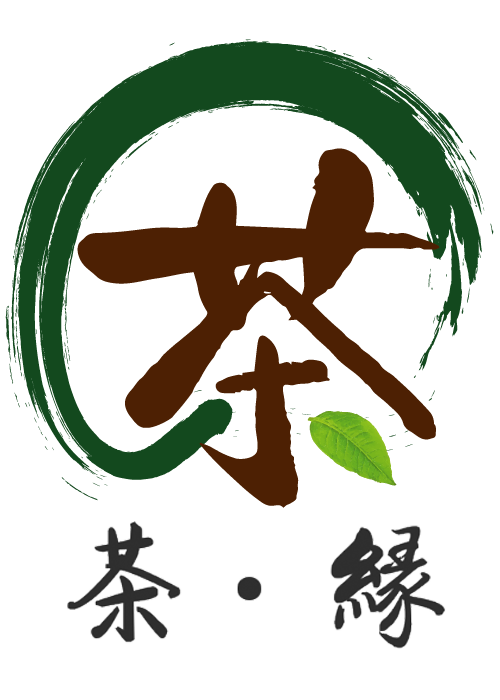
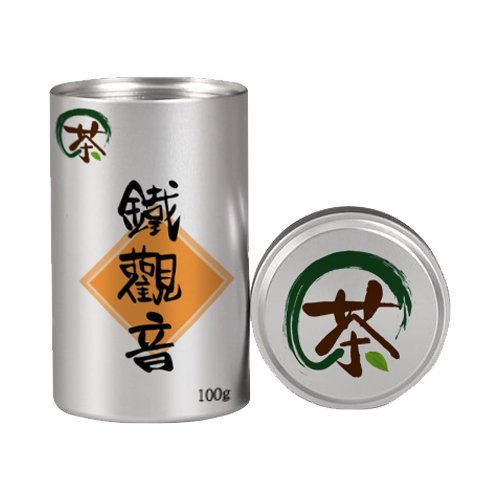
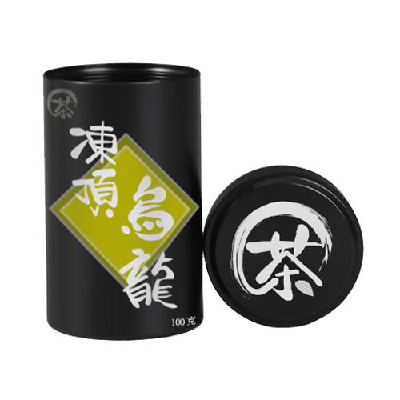

Introduction
Company: 茶・緣
- Year: 2021
- Duration: 2 weeks
My Role
- Understand the client's need & positing of the company,
- Design artwork based on the objective of the project,
- Explain the logic & insight,
- Adjust the artwork based on request
Logic & insight
- 茶・緣 has meanings of "tea garden" and the predetermined binding force (緣) between the company and the client by tea.
- Considing the communications with the company members, I decided to use Chinoiserie as their main corporate image.
- "緣" with the same pronunciation of "圓", which stands for “fulfilled” & “oneness” in Chinses culture.
- Thus I tried to combine the chinese word "茶" and a circle to represent the tea tree in tea garden in the desgin.
- While the circle is connected with the word "茶" as to represent the predetermined binding force.
Logo
With different size which able to represent the company in different size of products.

Product Image

